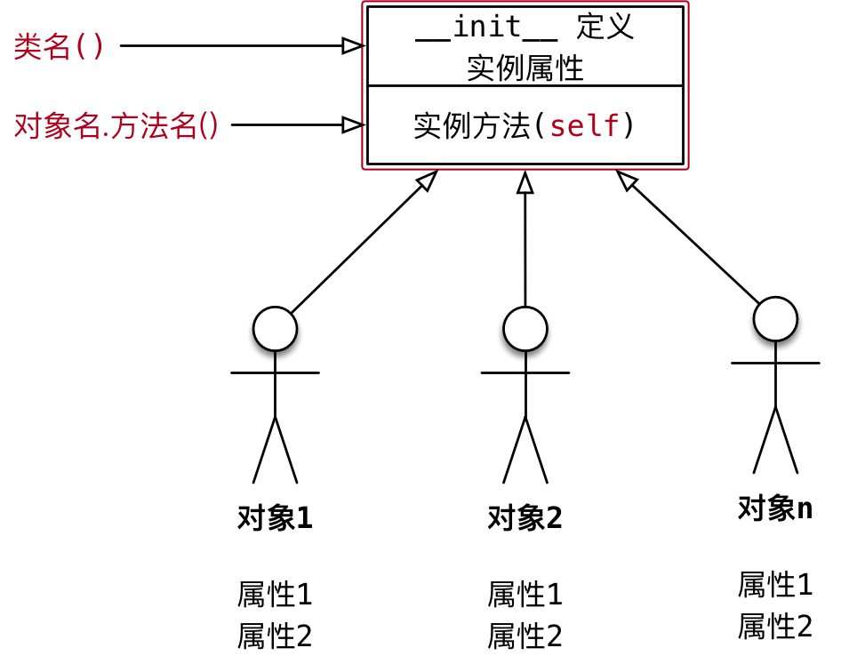
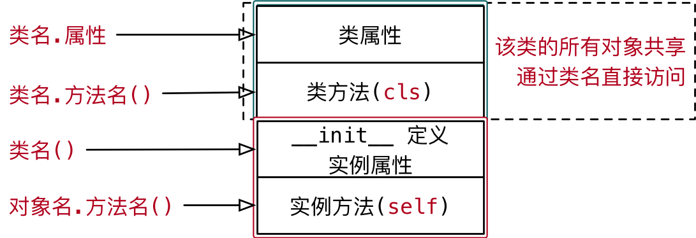
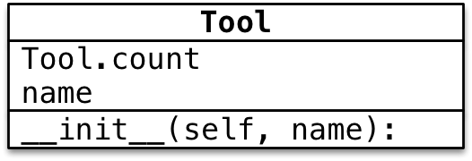
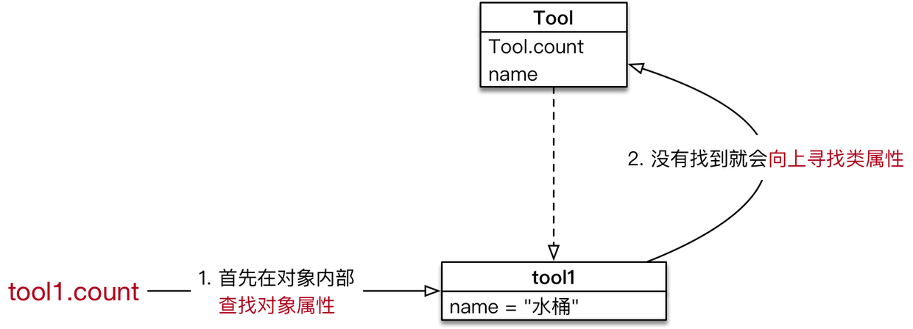
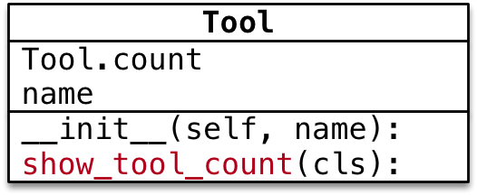
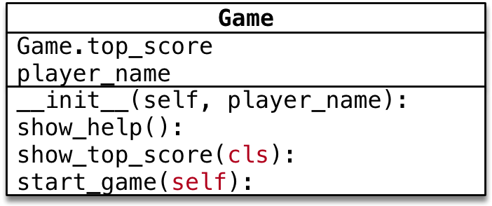

类属性和类方法¶
目标¶
- 类的结构
- 类属性和实例属性
- 类方法和静态方法
01. 类的结构¶
1.1 术语 —— 实例¶
- 使用面相对象开发，第 1 步 是设计 类
- 使用 类名() 创建对象，创建对象 的动作有两步：
- 1) 在内存中为对象 分配空间
- 2) 调用初始化方法
__init__为 对象初始化
- 对象创建后，内存 中就有了一个对象的 实实在在 的存在 —— 实例

因此，通常也会把：
- 创建出来的 对象 叫做 类 的 实例
- 创建对象的 动作 叫做 实例化
- 对象的属性 叫做 实例属性
- 对象调用的方法 叫做 实例方法
在程序执行时：
- 对象各自拥有自己的 实例属性
- 调用对象方法，可以通过
self.- 访问自己的属性
- 调用自己的方法
结论
- 每一个对象 都有自己 独立的内存空间，保存各自不同的属性
- 多个对象的方法，在内存中只有一份，在调用方法时，需要把对象的引用 传递到方法内部
1.2 类是一个特殊的对象¶
Python中 一切皆对象：
class AAA:定义的类属于 类对象obj1 = AAA()属于 实例对象
- 在程序运行时，类 同样 会被加载到内存
- 在
Python中，类 是一个特殊的对象 —— 类对象 - 在程序运行时，类对象 在内存中 只有一份，使用 一个类 可以创建出 很多个对象实例
- 除了封装 实例 的 属性 和 方法**外，**类对象 还可以拥有自己的 属性 和 方法
- 类属性
- 类方法
- 通过 类名. 的方式可以 访问类的属性 或者 调用类的方法

02. 类属性和实例属性¶
2.1 概念和使用¶
- 类属性 就是给 类对象 中定义的 属性
- 通常用来记录 与这个类相关 的特征
- 类属性 不会用于**记录 **具体对象的特征
示例需求
- 定义一个 工具类
- 每件工具都有自己的
name - 需求 —— 知道使用这个类，创建了多少个工具对象？

class Tool(object): # 使用赋值语句，定义类属性，记录创建工具对象的总数 count = 0 def __init__(self, name): self.name = name # 针对类属性做一个计数+1 Tool.count += 1 # 创建工具对象 tool1 = Tool("斧头") tool2 = Tool("榔头") tool3 = Tool("铁锹") # 知道使用 Tool 类到底创建了多少个对象? print("现在创建了 %d 个工具" % Tool.count)
2.2 属性的获取机制（科普）¶
- 在
Python中 属性的获取 存在一个 向上查找机制

- 因此，要访问类属性有两种方式：
- 类名.类属性
- 对象.类属性 （不推荐）
注意
- 如果使用
对象.类属性 = 值赋值语句，只会 给对象添加一个属性，而不会影响到 类属性的值 例:执行结果:class Tool(object): # 使用赋值语句定义类属性，记录所有工具对象的数量 count = 0 def __init__(self, name): self.name = name # 让类属性的值+1 Tool.count += 1 # 1. 创建工具对象 tool1 = Tool("斧头") tool2 = Tool("榔头") tool3 = Tool("水桶") # 2. 输出工具对象的总数 tool3.count = 99 #设置属性值,直接在对象中添加这个属性 print("工具对象总数 %d" % tool3.count) print("===> %d" % Tool.count)
工具对象总数 99 ===> 3
03. 类方法和静态方法¶
3.1 类方法¶
- 类属性 就是针对 类对象 定义的属性
- 使用 赋值语句 在
class关键字下方可以定义 类属性 - 类属性 用于记录 与这个类相关 的特征
- 使用 赋值语句 在
- 类方法 就是针对 类对象 定义的方法
- 在 类方法 内部可以直接访问 类属性 或者调用其他的 类方法
语法如下
@classmethod def 类方法名(cls): pass
- 类方法需要用 修饰器
@classmethod来标识，告诉解释器这是一个类方法 - 类方法的 第一个参数 应该是
cls- 由 哪一个类 调用的方法，方法内的
cls就是 哪一个类的引用 - 这个参数和 实例方法 的第一个参数是
self类似 - 提示 使用其他名称也可以，不过习惯使用
cls
- 由 哪一个类 调用的方法，方法内的
- 通过 类名. 调用 类方法，调用方法时，不需要传递
cls参数 - 在方法内部
- 可以通过
cls.访问类的属性 - 也可以通过
cls.调用其他的类方法
- 可以通过
示例需求
- 定义一个 工具类
- 每件工具都有自己的
name - 需求 —— 在 类 封装一个
show_tool_count的类方法，输出使用当前这个类，创建的对象个数

@classmethod def show_tool_count(cls): """显示工具对象的总数""" print("工具对象的总数 %d" % cls.count)
在类方法内部，可以直接使用
cls访问 类属性 或者 调用类方法 例:执行结果:class Tool(object): # 使用赋值语句定义类属性，记录所有工具对象的数量 count = 0 @classmethod def show_tool_count(cls): print("工具对象的数量 %d" % cls.count) def __init__(self, name): self.name = name # 让类属性的值+1 Tool.count += 1 # 创建工具对象 tool1 = Tool("斧头") tool2 = Tool("榔头") # 调用类方法,使用的类.方法名 Tool.show_tool_count()工具对象的数量 2
3.2 静态方法¶
-
在开发时，如果需要在 类 中封装一个方法，这个方法(不调用其它的玩意)：
- 既 不需要 访问 实例属性 或者调用 实例方法
- 也 不需要 访问 类属性 或者调用 类方法
-
这个时候，可以把这个方法封装成一个 静态方法
语法如下
@staticmethod def 静态方法名(): #不需要定义第一个参数 pass
- 静态方法 需要用 修饰器
@staticmethod来标识，告诉解释器这是一个静态方法 - 通过 类名. 调用 静态方法
class Dog(object): @staticmethod def run(): # 不访问实例属性/类属性 print("小狗要跑...") # 通过类名.调用静态方法 - 不需要创建对象 Dog.run()
小狗要跑...
3.3 方法综合案例¶
需求
- 设计一个
Game类 - 属性：
- 定义一个 类属性
top_score记录游戏的 历史最高分 - 定义一个 实例属性
player_name记录 当前游戏的玩家姓名
- 定义一个 类属性
- 方法：
- 静态方法
show_help显示游戏帮助信息 - 类方法
show_top_score显示历史最高分 - 实例方法
start_game开始当前玩家的游戏
- 静态方法
- 主程序步骤
- 1) 查看帮助信息
- 2) 查看历史最高分
- 3) 创建游戏对象，开始游戏

案例小结¶
- 实例方法 —— 方法内部需要访问 实例属性
- 实例方法 内部可以使用 类名. 访问类属性
- 类方法 —— 方法内部 只 需要访问 类属性
- 静态方法 —— 方法内部，不需要访问 实例属性 和 类属性
提问
如果方法内部 即需要访问 实例属性，又需要访问 类属性，应该定义成什么方法？
答案
- 应该定义 实例方法
- 因为，类只有一个，在 实例方法 内部可以使用 类名. 访问类属性
class Game(object): # 游戏最高分，类属性 top_score = 0 #初始值为零 @staticmethod #静态方法 def show_help(): print("帮助信息：让僵尸走进房间") @classmethod #类方法 def show_top_score(cls): print("游戏最高分是 %d" % cls.top_score) def __init__(self, player_name): #实例方法初始化 self.player_name = player_name def start_game(self): print("[%s] 开始游戏..." % self.player_name) #调用实例属性 # 使用类名.修改历史最高分 Game.top_score = 999 # 1. 查看游戏帮助 Game.show_help() # 2. 查看游戏最高分 Game.show_top_score() # 3. 创建游戏对象，开始游戏 game = Game("小明") game.start_game() # 4. 游戏结束，查看游戏最高分 Game.show_top_score()